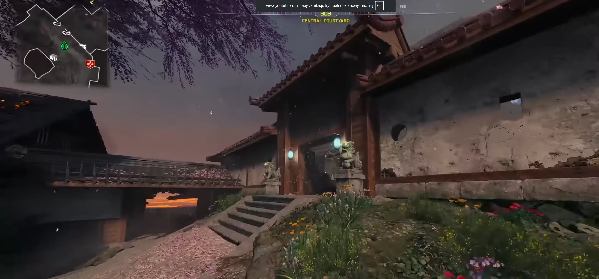
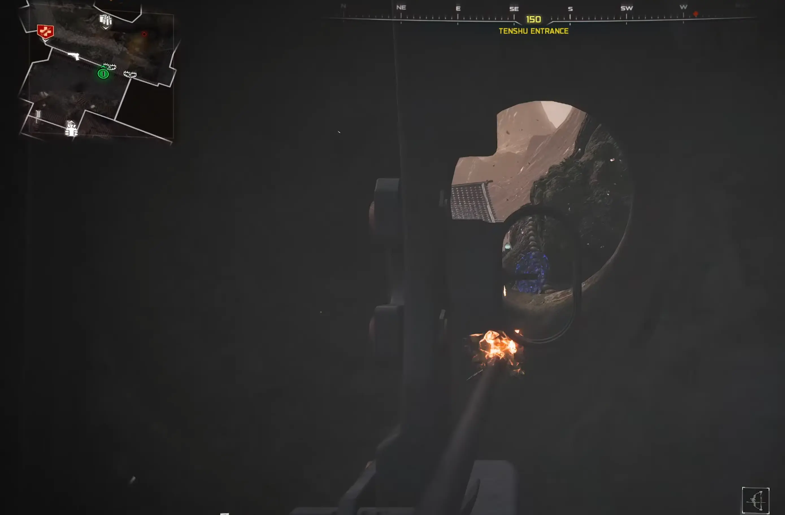
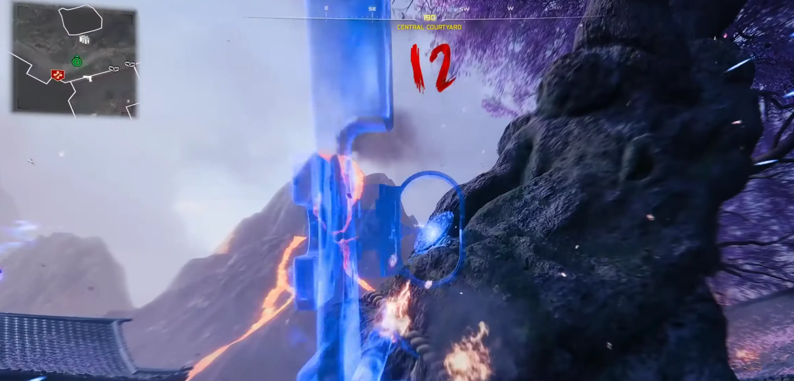

← Powrót do poprzedniej strony
KROK 1: Uzbrój się w łuk.
Zanim zaczniesz, musisz zdobyć Combat Bow (Łuk bojowy). Możesz go trafić jako losowy łup ze skrzyń lub po prostu kupić przy Stole rzemieślniczym.
KROK 2: Pierwszy strzał przez dziurę.
- Udaj się do miejsca, gdzie znajdują się posągi lwów (lokacja pułapki).
- Aktywuj pułapkę Ghostly Rifleman.
- Stań za pułapką i spójrz przez okno, w którym znajduje się mały otwór.
- Musisz strzelić z łuku w tarczę widoczną przez tę dziurę.
- Uwaga: Podczas celowania będziesz kaszleć i otrzymywać obrażenia, więc rób to szybko!


KROK 3: Wyzwanie w Zasłonie Eterycznej.
- Gdy trafisz w tarczę, gra automatycznie aktywuje Zasłonę Eteryczną.
- Pędź na centralny dziedziniec, gdzie rośnie Blossom Tree (Kwitnące drzewo wiśni Takeo).
- Na pniu drzewa zaczną pojawiać się kolejne tarcze.
- Zestrzel je wszystkie z łuku. Jeśli zrobisz to poprawnie, usłyszysz charakterystyczny dźwięk aktywacji.

KROK 4: Rytuał masek.
Wróć do pułapki. Po jej prawej stronie zobaczysz cztery lewitujące, japońskie maski krążące w kole. Podejdź do nich i wejdź w interakcję. Maski wlecą do posągów lwów, a ich oczy zmienią kolor na żółty.

KROK 5: Nagroda i finał.
W nagrodę posąg wypluje Decoy Grenade (Granat wabiący), który przyda Ci się, gdy będziesz czekać na odnowienie pułapki. Gdy czas odnowienia minie, oczy posągów zaświecą się na zielono – to znak, że ulepszona wersja jest gotowa!
EFEKT:Ulepszona pułapka strzela laserami, które dodatkowo nakładają efekty Ammo Mods (np. wybuchowe fajerwerki).